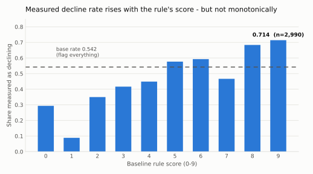
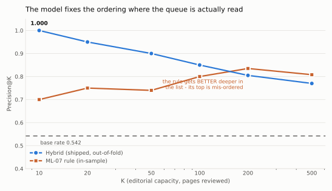
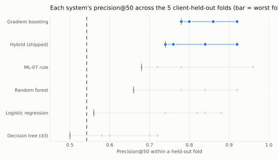
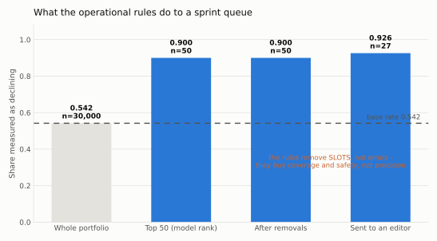

FlyRank ML Internship · Capstone · Lane 2
Ranking measured organic decline across 30,000 content items, when editorial capacity is 50 slots a sprint and the base rate is already 54%.
Among mature indexed content items with established search demand, which pages are undergoing measured organic decline and should be prioritised for editorial review in the coming sprint? The work uses the FlyRank internship starter dataset — 30,000 pseudonymized content items across 32 clients, one trailing 90-day window. I framed the task as capacity-constrained ranking rather than classification, committed to precision@50 against the 54.2% base rate before building anything, and built a transparent five-condition rule baseline with reason codes on every row; it reaches precision@50 = 0.740 in-sample and carries a self-diagnosed defect — its precision rises with K, so it finds a good band of candidates but orders that band backwards at the top, where the queue is actually read. Four models were then trained and compared on a client-held-out split (GroupKFold, 32 clients, zero overlap), with the baseline scored on identical rows; the shipped system is a hybrid in which the rule selects the band and supplies the reason codes while a logistic regression orders pages within it, reaching precision@50 = 0.900 against a 0.542 base rate — 45 of 50 review slots landing on pages measured as declining, versus 27 for random triage — and it is the only candidate whose precision falls monotonically from 1.000 at K=10. Three results run against that headline and are reported with it: a random row split inflates AUC by 0.152 over the grouped split (pure client memorisation), the model's top feature by a factor of 2.4 is impressions volume rather than anything resembling decay, and four of its five top-50 misses are pages that grew — the same failure the rule made. The output is a ranked review queue: decision support telling an editor which pages to open first, not a prediction that refreshing them recovers traffic.
A content strategist opens a sprint planning doc on a Monday. The portfolio has 30,000 published pages. Writer hours and optimisation budget cover about 50 of them. The question is not “which pages are declining?” — more than half of them are — it is which 50 to open first.
That framing decides the metric. Fifty slots against 30,000 pages is 0.17% of the portfolio, so this is a ranking problem, and the only figure that matches the decision is precision at the top of the ranking. Accuracy is the wrong instrument, and recall is close to meaningless: with 16,262 positive rows and 50 slots, the maximum achievable recall is 0.31%.
content_id). Grain verified in code — 30,000 rows, 30,000 distinct IDs, zero duplicates. client_id is used for grouping and splitting only, never as a feature.The industry-standard answer is a staleness rule: refresh what has not been touched in six months. Measured on this slice, that rule has almost nothing to fire on. Only 174 pages are more than 180 days stale, and only 17 are both ≥180 days stale and carry ≥500 impressions. A staleness-gated rule fills 17 of 50 slots and then tie-breaks arbitrarily.
The signals that do exist are bands and interactions rather than thresholds. days_with_impressions rises from a 0.149 decline rate to 0.649 and then falls back. Position is an inverted U: top-3 pages decline least (0.241), positions 11–20 most (0.610). CTR carries signal only conditional on volume. Hand-tuning those bands is fitting the data with worse bookkeeping and no held-out check — so the argument here is not that ML is stronger, it is that ML is the honest way to fit what I would otherwise hand-tune. I built the hand-tuned rule anyway, so the model had a real bar to clear.
Source. One table — the FlyRank ML internship starter release, data/raw/content_refresh_anonymized.csv: 30,000 rows × 44 columns, 32 pseudonymized clients, trailing-90-day metrics. The gated ~79M-row warehouse release was not used; where it would change a conclusion, that is stated as a limit rather than worked around. No client names, domains, URLs or raw search queries appear anywhere in this work, and no free text of any kind reaches the feature matrix.
Asserted in code, not assumed. Every time field is a relative offset from an unstated snapshot date, and three consequences follow that shape the whole project:
last_30d + prev_30d == impressions_90d holds for only 8.7% of rows.days_with_impressions caps at 88 while days_with_sessions reaches 90 — the Search Console reporting lag, visible in the data. The search and analytics windows are not the same length.content_age_days has a minimum of exactly 90. The file was pre-filtered upstream to mature pages, which is why my own “mature pages” filter dropped nothing: the filter had already been applied before I received the file.A time-aware split is therefore impossible from this file, and I say so rather than approximating one.
The data dictionary names two forbidden fields. The true set is four. The label is a −20% threshold on the ratio of impressions_last_30d to impressions_prev_30d, so that pair reconstructs the label exactly — 1.0000 agreement.
No single-feature screen would have caught it. impressions_last_30d scores ROC-AUC 0.486 on its own — it looks like the least informative column in the file — while impressions_prev_30d scores 0.621 and looks like an ordinary decent feature. A pipeline that ranks features univariately and drops the suspicious ones would have kept the weakest-looking column and produced a perfect, meaningless model. Leakage lives in how the label was defined, not in column names or univariate statistics.
Twelve fields were excluded on that basis: the label source (trend_direction, trend_pct), the reconstruction pair, the four other last-vs-prev columns (measured agreement 0.536–0.538, i.e. not leaks, dropped anyway as weak and hard to defend in review), two generation-provenance flags describing which internal pipeline wrote a page, and the two IDs. That leaves 32 feature fields, and the contract asserts in code that all 44 file columns plus the engineered label land in exactly one bucket, so it cannot silently drift from the file.
avg_position = 0 means “no data”, not rank 1 — 1,205 rows. Recoded to missing plus a has_position_data flag. Left as zero, those pages would look like the best-ranked content in the portfolio.ctr = 0.76 is 0.76%), and scroll_rate / ai_traffic_pct legitimately exceed 100 on 119 and 23 rows because numerator and denominator come from different systems. Not clipped.feedly article is 100% missing search_volume/competition/cpc; label rates by type are 0.287 / 0.561 / 0.572. A blind fillna(0) would hand the model a proxy for “this is a feedly article” dressed up as a demand feature, so every gap gets an explicit has_* indicator.client_id — Section 5 prices exactly what ignoring that would have bought me.is_declining_label = 1 when trend_direction == "down" — impressions fell more than 20% between the most recent 30 days and the 30 before. Base rate 0.5421 (16,262 of 30,000). Label and features are drawn from the same 90-day window, which makes this concurrent decline detection, not forecasting. The honest sentence is “this page resembles the pages measured as declining”, never “this page will decline”.
A transparent additive score — five readable conditions, no fitted weights, reason codes on every row:
3×established_coverage + 2×has_demand + 2×mid_position + 1×stale_90d + 1×mature_page| Condition | Points | Plain reading |
|---|---|---|
20 ≤ days_with_impressions ≤ 87 | 3 | Real sustained coverage, but not showing every day. |
impressions_90d ≥ 40 | 2 | Enough demand for a refresh to be worth anything. |
3 < avg_position ≤ 50 | 2 | Findable but not already winning. Excludes the no-data zeros. |
days_since_last_update ≥ 90 | 1 | Not touched in a quarter. |
90 ≤ content_age_days < 365 | 1 | Settled, but still current. |
Ties break on min(log1p(impressions_90d), 10). The rule reaches precision@50 = 0.740 in-sample, clearing the ≥0.70 usefulness floor I committed to before building anything.
Its precision rises with K — 0.750 @20, 0.740 @50, 0.800 @100, 0.835 @200 — which can only happen if the highest-ranked rows are worse than the rows below them. The three top-ranked pages in the queue all measured up (+54.4%, +68.5%, +35.2%): the tie-break sorts by traffic size, and the biggest pages here are the most stable. The rule finds a good band and does not rank within it. Reversing the tie-break is no better at the top and worse deeper, so I kept it and reported the flaw.

Four candidates, listed in order of readability so a simple winner would be visible if it happened: logistic regression, a depth-3 decision tree, a random forest, and histogram gradient boosting. Each is used as a ranking score via predict_proba, never thresholded at 0.5. No hyperparameter search — library defaults plus two conservative variance guards, because an untuned model that wins is a cleaner claim than a tuned one that wins by tuning.
The feature matrix is 38 columns from the 32 contract-approved fields: 29 numeric (including six has_* missing indicators) and 9 closed-vocabulary categoricals one-hot encoded inside the cross-validation loop, so a category appearing only in a test fold cannot influence the encoding. avg_position == 0 is recoded to missing before anything else, and the heavy-tailed counts (skew 11–18) are log1p'd.
The rule's defect was specific — good band, bad ordering inside it. So a model earns its place only if precision stops rising with K. Not “if it scores higher”: if the shape of the curve changes.
All model figures are pooled out-of-fold on the client-held-out split. The base rate sits in the table so no number is read alone.
| System | p@20 | p@50 | p@100 | p@200 | ROC-AUC |
|---|---|---|---|---|---|
| Flag everything (floor) | 0.542 | 0.542 | 0.542 | 0.542 | 0.500 |
| My rule baseline (in-sample) | 0.750 | 0.740 | 0.800 | 0.835 | 0.649 |
| Decision tree (depth 3) | 0.600 | 0.600 | 0.570 | 0.600 | 0.624 |
| Random forest | 0.550 | 0.680 | 0.740 | 0.780 | 0.681 |
| Histogram gradient boosting | 0.900 | 0.820 | 0.790 | 0.800 | 0.691 |
| Logistic regression | 0.800 | 0.880 | 0.810 | 0.805 | 0.677 |
| Hybrid — rule band, logistic orders within it (shipped) | 0.950 | 0.900 | 0.850 | 0.805 | 0.661 |
Receipt: work/outputs/model_metrics.json. The rule's thresholds were read off crosstabs computed on all 30,000 rows, so it is mildly in-sample while every model number is strictly out-of-fold — the comparison is tilted toward the baseline, not the model.

| Table view of Figure 2 — precision@K | 10 | 20 | 50 | 100 | 200 | 500 |
|---|---|---|---|---|---|---|
| Rule baseline (in-sample) | 0.700 | 0.750 | 0.740 | 0.800 | 0.835 | 0.808 |
| Hybrid (shipped, out-of-fold) | 1.000 | 0.950 | 0.900 | 0.850 | 0.805 | 0.770 |
| Base rate | 0.542 | 0.542 | 0.542 | 0.542 | 0.542 | 0.542 |
A figure should never be the only way to read a number — so every chart on this page has its values in text beside it.
Same model, same features, two splits:
| Split | ROC-AUC | p@50 |
|---|---|---|
| Random 80/20 row split | 0.777 | 0.920 |
| Grouped, clients held out | 0.624 | 0.780 |
A 0.152 AUC gap of pure client memorisation. Per-client label rates span 0.000–0.937 across 32 clients and the three largest hold 43.3% of rows, so a random split mostly measures which client a page belongs to. This is the single easiest way to publish an inflated number on this dataset, and it is measured here rather than asserted.
One row moves it by 0.02. Bootstrapped 95% intervals on the selected set:
| System | p@50 | 95% interval |
|---|---|---|
| Rule baseline | 0.740 | [0.620, 0.860] |
| Logistic regression | 0.880 | [0.780, 0.960] |
| Hybrid (shipped) | 0.900 | [0.820, 0.980] |
The hybrid's interval and the rule's overlap only slightly. On one dataset and one 90-day window, the improvement is measured and directional, not established.

| Table view of Figure 3 — p@50 per held-out fold | 1 | 2 | 3 | 4 | 5 | mean | worst |
|---|---|---|---|---|---|---|---|
| Decision tree (d3) | 0.50 | 0.60 | 0.58 | 0.72 | 0.70 | 0.620 | 0.50 |
| Logistic regression | 0.82 | 0.84 | 0.56 | 0.74 | 0.88 | 0.768 | 0.56 |
| Random forest | 0.78 | 0.92 | 0.84 | 0.66 | 0.66 | 0.772 | 0.66 |
| Rule baseline | 0.72 | 0.78 | 0.78 | 0.96 | 0.68 | 0.784 | 0.68 |
| Hybrid (shipped) | 0.84 | 0.92 | 0.74 | 0.84 | 0.76 | 0.820 | 0.74 |
| Gradient boosting | 0.92 | 0.78 | 0.78 | 0.86 | 0.80 | 0.828 | 0.78 |
Folds are groups of clients, not rows. Base rate 0.542 throughout.
The hybrid is the compromise: second on both measures, with the band structure preventing any single fold model's mis-calibration from dragging a page into the top 50. If a future release shows the fold floor mattering more than the pooled top-50, the choice should flip to boosting — written down now rather than defended later.
I predicted false positives would concentrate in high-impression pages and in low-volume pages. Neither is what happened. Four of the hybrid's five top-50 misses are pages that grew (+23.6% to +93.7%) — the direction I predicted — but they span 84 to 1,593 impressions, so volume is not the shared trait. What they share is position: every miss sits at avg_position 4.1–10.5, i.e. page one. The model cannot separate a healthy page-1 page from a decaying one — the same blind spot the signal audit found from the other direction, where top-3 pages decline least of any band (0.241 against a 0.542 base rate). Strong position is genuinely ambiguous evidence in this data, and my prior pointed at the wrong axis.
The verification step is to inject a known leak and confirm the harness catches it. Adding the two forbidden columns back moves out-of-fold AUC from 0.677 to 0.920 as raw counts — but to 0.9996 in log space. Same two columns, same model, an 0.08 AUC difference. The reason is that the label is a threshold on a ratio, which is linear in logs and not in raw counts, so a linear model can only fully exploit the leak when the representation matches the label's functional form.
Leakage is a property of (column, representation, model), not of a column. A screen that evaluates columns before deciding how they will be transformed can under-state a leak by exactly the margin that later gets waved through as “the model is just a bit good”.
I audited two findings from The State of AI-Driven SEO (March 2026) with the questions I ask of my own work. Its methodology page is more careful than most published SEO research — it names its confounders, flags its own unstable buckets, and states plainly that the study is observational. Both issues below are places where the paper contradicts either itself or the dataset it shipped with, so both are checkable in code rather than matters of taste.
The two objections I raised are the two I am most at risk of committing — which is why Section 5 is my answer to the split objection, measured on my own model at my own cost, and why the base rate appears beside every precision figure on this page.
impressions_90d at an 0.119 AUC drop — 2.4× the next feature (clicks_90d, 0.050), with avg_position at 0.028 the only non-volume feature near the top. I flagged this risk in writing before training and it reproduced. A system whose two strongest signals are exposure and position has no way to tell a well-performing page-1 page from a decaying one — which is exactly where its top-50 misses land.impressions_90d alone scores AUC 0.585, and a 90-day sum cannot express a direction), the task is framed as concurrent detection, and a clean version needs day-61–90 features this file cannot produce. It is disclosed rather than passed.impressions_90d while carrying −0.62 on clicks_90d and −0.59 on users_90d. Those columns are strongly collinear, so the fit has split one signal across several columns and the sign of any single coefficient is not a statement about the world.comparison article rows the measured AUC is 0.524 — chance. Per-type skill in this portfolio spans 0.524 to 0.843.ctr == 0, overwhelmingly tiny pages where the ratio has no content. Among visible pages the signal is clean and monotone, 0.677 at CTR ≤ 0.10 falling to 0.460 above 1.0. I corrected the earlier notebook rather than leave two contradictory statements in the repo. The lesson that mattered for the model: CTR carries signal only in interaction with volume — which a threshold cannot express, and which is part of the case for fitting rather than hand-tuning.engagement_rate == 0 and 99% of visible pages fall in a single band; the smallest bucket has n=3. Any rule keyed on engagement bands fires on noise. This is an instrumentation gap, not a content problem — it says where not to spend the next measurement effort.Every row of the shipped queue is a review recommendation. The system never recommends publishing a change — only opening a page. All 50 rows of the shipped top-50 sit at baseline score 9, meaning all five rule conditions fired on every one of them, so each recommendation still arrives with the same auditable explanation the rule gave; the model changed only the order, which is precisely the part the rule was measured to get wrong.
| Reason-code pattern | Action | Confidence | Limit |
|---|---|---|---|
| All five codes, model-ranked top 50 | Refresh review | Medium-high — 45 of 50 measured declining (0.900 vs 0.542) | Off-season intent looks identical; no seasonality field exists to rule it out |
All five codes, page-1 position (avg_position < 11) | Refresh review, but verify direction first | Medium — this is where every measured error sits | 4 of the 5 top-50 misses are page-1 pages that grew (+23.6% to +93.7%) |
Any comparison article | Do not trust the rank | None — measured AUC 0.524 | 697 pages the model cannot order at all |
established_coverage + has_demand, no stale_90d | Monitor | Low-medium | Recently updated; a second refresh is unlikely to be the lever |
Missing mid_position (top-3, or no position data) | Deprioritise | Medium | top_3 declines least (0.241); avg_position == 0 means no reading at all |
no_signal | Leave alone | — | 75 pages, declining rate 0.293 — below the base rate |

comparison article reached the top 50 — and what changes is how many pages survive. The filtering buys coverage and safety, not accuracy — which is why the raw and filtered numbers are drawn side by side rather than the filtered one being reported alone.| Table view of Figure 4 | Pages | Share declining |
|---|---|---|
| Whole portfolio | 30,000 | 0.542 |
| Top 50 by model rank | 50 | 0.900 |
| After removals (comparison articles) | 50 | 0.900 |
| Sent to an editor | 27 | 0.926 |
The cap is doing something the precision metric cannot see. The hybrid's top 50 spans only 7 of 32 clients, with one supplying 58% of the slots — worse portfolio coverage than the rule it replaces (44%). An 8-page-per-client cap defers 23 rows and cuts the largest client's share to 30%, leaving 27 sendable pages. That set measures 0.926 declining, but that number is not model performance — it is what a human decision layered on the ranking produced, and the two must never be conflated.
hybrid_score, with the action column already applied.avg_position 4.1–10.5 and is growing. Strong position is ambiguous evidence in this data, and this is the failure mode that survived from the rule into the model.comparison article rows entirely until there is a model that can rank them.Each trigger carries a reference value measured from this build, so drift is a comparison rather than a feeling. Tier 1, every sprint: base rate outside 0.45–0.65; realised precision@50 below 0.70 — the usefulness floor committed to before anything was built — for two consecutive sprints; the largest client exceeding 40% of the sendable set, meaning the cap has stopped working. Tier 3, immediate refit: any change to the ±20% label threshold (not hypothetical — FlyRank's own published research documents that same field as ±10%), and any new client onboarded, whose queue should be withheld until history exists, because the measured cost of an unseen client is 0.152 AUC.
Every Tier-1 trigger except the base rate needs to know what the editor actually did, and no such record exists. The whole monitoring plan is blocked on a three-column decision log: content_id, decision, date. It is also the only route to the causal question this work cannot currently answer — and the only way to build a genuine past→future label next quarter.
RANDOM_STATE = 42 in every notebook — split, every model, and the bootstrap. The run behind Sections 4–6 used scikit-learn 1.9.0, pandas 3.0.1, numpy 2.4.0, printed by the notebook's own setup cell. Every estimator is clone()d per fold, so no fitted state is shared between folds — worth stating, because sklearn.pipeline.Pipeline does not clone its final estimator and reusing one silently produces a model fitted on the wrong fold.
git clone https://github.com/KhanBuilds/Rayanflyrank
cd Rayanflyrank
pip install -r requirements.txt
# then run, in order:
# work/notebooks/w01_research_question.ipynb (ML-02)
# work/notebooks/w02_ml_task_framing.ipynb (ML-03)
# work/notebooks/w03_data_contract.ipynb (ML-04)
# work/notebooks/w03_feature_leakage_check.ipynb (ML-05)
# work/notebooks/w04_signal_audit.ipynb (ML-06)
# work/notebooks/w04_baseline_score.ipynb (ML-07)
# work/notebooks/w05_model.ipynb (ML-08) ~8-10 min
# work/notebooks/w06_validation_audit.ipynb (ML-09)
# work/notebooks/w07_action_playbook.ipynb (ML-10)
# work/notebooks/capstone.ipynb (ML-11/12)Every notebook is self-contained and order-independent: each resolves the repo root, loads the starter CSV, and rebuilds what it needs rather than depending on another notebook having been run. All ten were executed top to bottom through a real Jupyter kernel via nbconvert --execute and ship with their outputs stored, with an execution_count sequence of exactly 1..N — which is how a reader can tell each was a single clean pass rather than a patchwork of cells run out of order. Verified mechanically across the set: zero cell errors, zero TODO markers, and zero pseudonymous IDs in any stored output.
Receipts. Every number on this page traces to one of three committed metrics files — work/outputs/baseline_metrics.json (Section 3, with its own honesty note in the evaluation field), work/outputs/model_metrics.json (Sections 4–6, including a known_failure_mode field recording the growing-page misses), and work/outputs/playbook_metrics.json (Section 7). Each downstream notebook asserts its numbers against the receipt upstream of it rather than quoting them, so a stale artifact breaks the run instead of quietly flattering the report. The ranked-queue CSVs are deliberately gitignored — datasets never enter git; the metrics JSONs are the committed trace instead.
Full repository, notebooks and receipts → · Long-form capstone report →
Built on the FlyRank ML Internship dataset — flyrank.ai. Thanks to the FlyRank team for the pseudonymized data release and the lane framing, and for shipping a data dictionary honest enough that the two places it disagrees with its own file were findable.